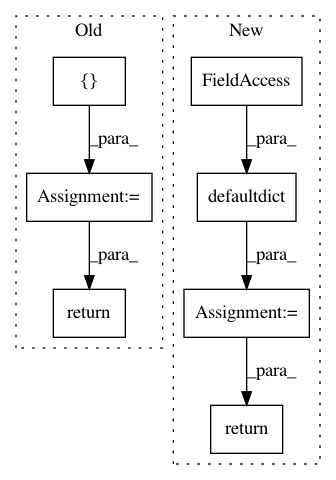

2c77c532b9d28e4431c9e52e7965321a188d68af,tensorflow_datasets/scripts/document_datasets.py,,dataset_docs_str,#Any#,340
Before Change
module_to_builder = make_module_to_builder_dict(datasets)
sections = sorted(list(module_to_builder.keys()))
section_tocs = []
section_docs = []
for section in sections:
builders = tf.nest.flatten(module_to_builder[section])
builders = sorted(builders, key=lambda b: b.name)
builder_docs = [document_single_builder(builder) for builder in builders]
section_doc = SECTION_DATASETS.format(
section_name=section, datasets="\n".join(builder_docs))
section_toc = create_section_toc(section, builders)
section_docs.append(section_doc)
section_tocs.append(section_toc)
full_doc = DOC.format(toc="\n".join(section_tocs),
datasets="\n".join(section_docs))
return full_doc
SCHEMA_ORG_PRE = \
<div itemscope itemtype="http://schema.org/Dataset">
After Change
module_to_builder = make_module_to_builder_dict(datasets)
sections = sorted(list(module_to_builder.keys()))
section_docs = collections.defaultdict(list)
for section in sections:
builders = tf.nest.flatten(module_to_builder[section])
builders = sorted(builders, key=lambda b: b.name)
builder_docs = [
(builder.name, document_single_builder(builder)) for builder in builders
]
section_docs[section.capitalize()] = builder_docs
return [DOC, section_docs]
SCHEMA_ORG_PRE = \
<div itemscope itemtype="http://schema.org/Dataset">
In pattern: SUPERPATTERN
Frequency: 3
Non-data size: 7
Instances
Project Name: tensorflow/datasets
Commit Name: 2c77c532b9d28e4431c9e52e7965321a188d68af
Time: 2019-08-08
Author: no-reply@google.com
File Name: tensorflow_datasets/scripts/document_datasets.py
Class Name:
Method Name: dataset_docs_str
Project Name: hellohaptik/chatbot_ner
Commit Name: b3e5f59dfec4493c0b999b90575c90ba0dd8708d
Time: 2019-07-16
Author: anas.ahmed@haptik.ai
File Name: datastore/elastic_search/query.py
Class Name:
Method Name: get_crf_data_for_entity_name
Project Name: coala/coala-bears
Commit Name: c35a2ed04935fd7665514e6af7828f1bfd931a03
Time: 2018-07-20
Author: 7020962+anctartica@users.noreply.github.com
File Name: .ci/generate_bear_requirements.py
Class Name:
Method Name: get_all_requirements